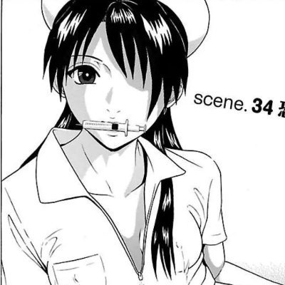

🍀🍥竹蜻蜓🍥🍀
@zqtlovekris99
@liyfn130024 这妈也够逆天，一直知道他孩子在o还有紫砂倾向也不收药不收刀的每次进完医院出来该吃吃，嘴唇发紫加上有od史还不送医院还搁那插自己检测仪呢心真大

#dpt不好体验分享
@liyfn130024
讣告2:
Mercy（小猫）死亡时间9月8日22:44
我刚看了死亡证明，和他妈聊了很多，这完全是一场本不该发生的可以阻止的悲剧。
下午5点多他陷入昏睡，他妈六点多发现嘴唇发紫头歪到一边，把他叫醒了。mercy讲他没事，只是想睡觉，他妈插上了检测仪，直到9点，心率越来越低，甚至停止时，才拨打了120